Polypropylene Bumper Repair
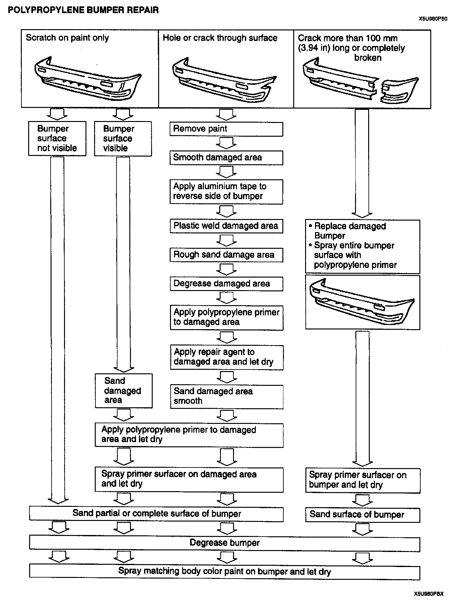
POLYPROPYLENE BUMPER REPAIR
PROCEDURE
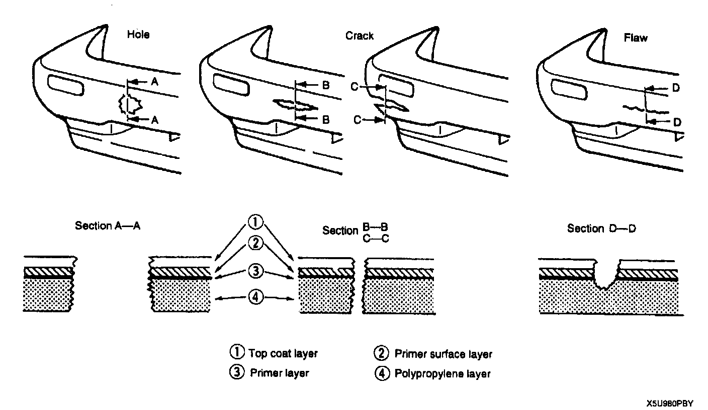
Repair of polypropylene bumpers having damage that has reached the surface of the polypropylene and are too serious to be restored by painting only.
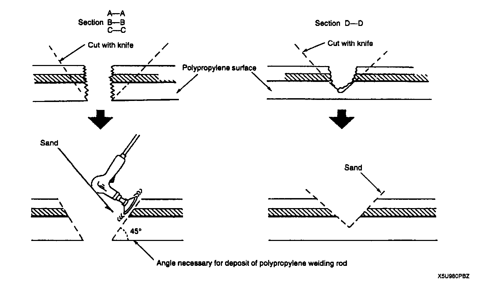
1. Cut the rough edges around the damage with a knife to make it smooth. Sand the area with a sander to make an angle of about 45 degrees.
2. Weld the damaged area.
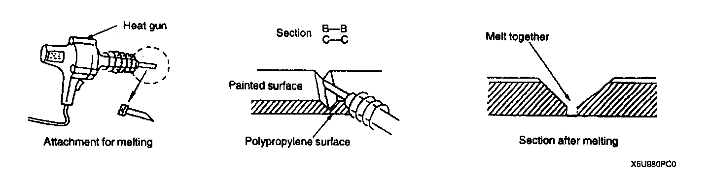
- For repair of a cracked area, melt the crack together with a heat gun and a melting attachment.
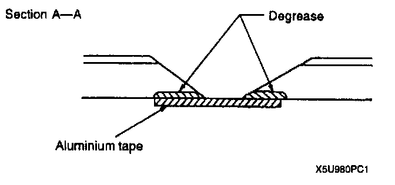
- For repair of a hole, degrease the area on both sides of the bumper and apply aluminium tape on the reverse side of the damaged area.
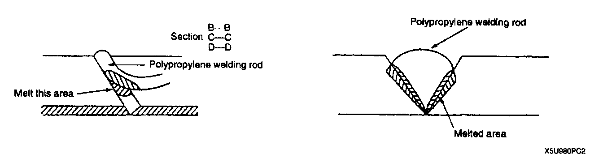
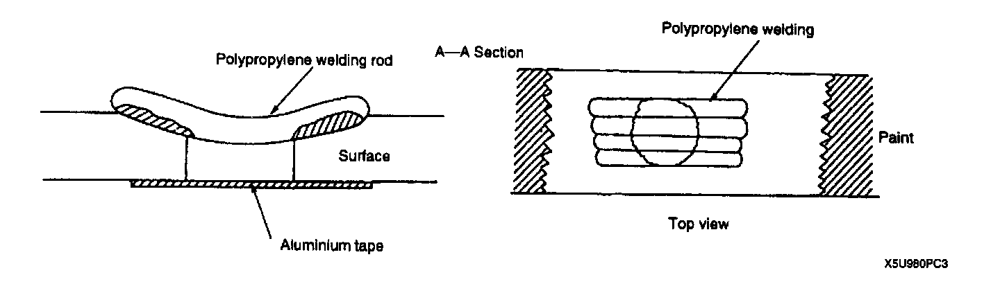
3. Melt the polypropylene welding rod with a heat gun and deposit it in the cracked area. Hold the heat gun 10-20 mm (0.39-0.79 in) from the part being welded. Do not move the welding rod until the welded parts cool.
CAUTION: Do not overly melt the welding rod. If the part is welded with the welding rod melted like jelly, the welding strength will be reduced.

4. Sand the surface of the polypropylene gradually as it is easily melted by the abrasion heat. Sand the area to which the repair agent will be applied.
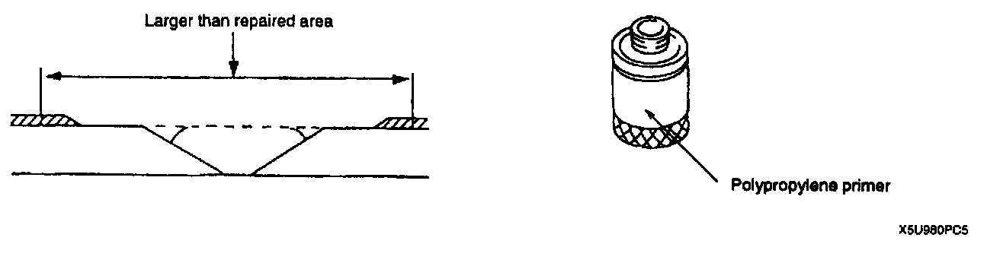
5. Uniformly apply polypropylene primer with a brush to an area larger than the repaired area. Allow it to dry for about 10 minutes at 20 degrees C (68 degrees F).
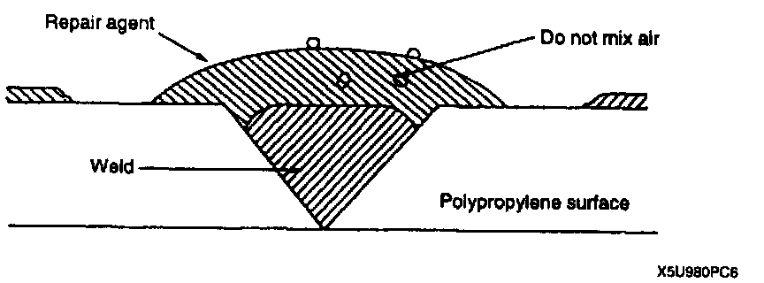
6. Mix the main agent and the stiffening agent in a ratio of one to one. Do not allow bubbles to form. Apply the mixed repair agent to the damaged area. Allow it to dry for about 30 minutes at 20 degrees C (68 degrees F).
NOTE:
- The repair agent hardens quickly (about 5 minutes); proceed with the work immediately after mixing the agents.
- Allow about 30 minutes to dry (20 degrees C (68 degrees F)) before sanding.
The repair agent is a two-part epoxy adhesive.
When the repair agent hardens, it will provide a good finish with the same flexibility as the polypropylene. The repair agent for a urethane bumper is also a two-part adhesive compound. However, this is different from that for a polypropylene bumper. If the incorrect repair agent is used, the repair will be faulty.
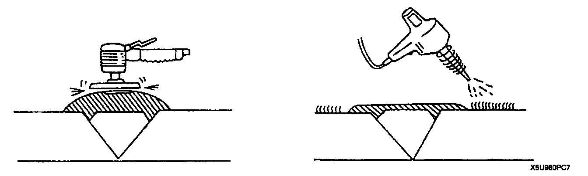
7. Sand the area with #180-#240 sandpaper. If fuzz remains around the repaired area, melt it with a heat gun.
CAUTION: Sand the area gently. If excessive force is applied to the area, the surface will be damaged.
8. Degrease the painted surface.
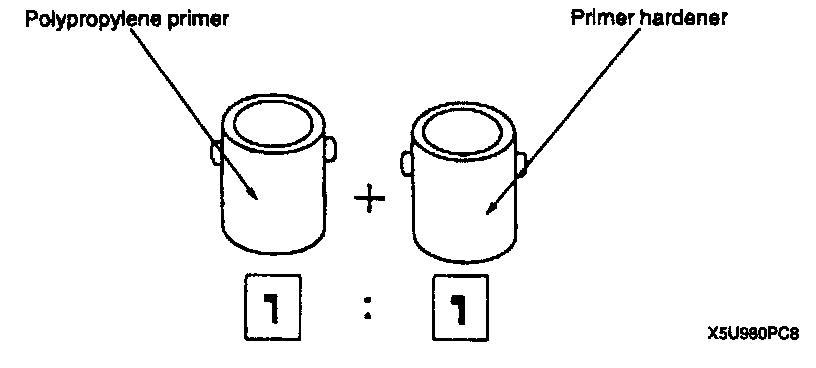
9. Mix the primer and the hardener at a ratio of one to one. Apply the primer to the repaired area and the surface of the bumper with a brush or spray.
10. Use the primer within 16 hours after it is mixed.
CAUTION: Polypropylene primer will dissolve even after drying if it is wiped with solvent. Therefore, use only water to clean around the primer.
11. Allow the part to dry.
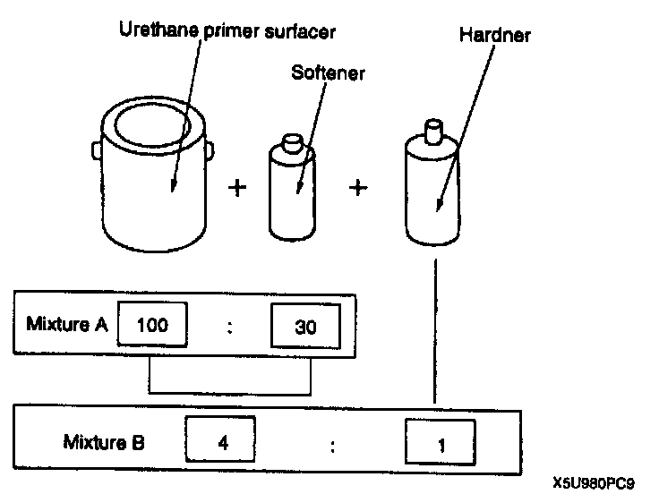
12. Add the softener to the urethane primer surfacer and dilute mixture B with thinner to spray on bumper.
Mixing method
Urethane primer surfacer +
Softener: Mixture A
Mixture A + hardener: Mixture B
Viscosity: 14-16 seconds/viscosimeter 20 degrees C (68 degrees F)
13. Spray the urethane primer surfacer on the repaired area.
Spray pressure: 300-400 kPa (3-4 kgf/sq.cm, 43-57 psi)
Standard film thickness: 30-50 u(mue)
Spray method
Spot-spray primer surfacer on the bumper three of four times
14. Air drying 20 degrees C (68 degrees F)-8 hours minimum. Forced drying 60 degrees C (140 degrees F)-1 hour
15. Lightly sand the complete surface of the bumper with #400-#600 sandpaper. Do not expose the surface of the polypropylene. (Wet or dry sanding is acceptable.)
16 .Wipe the complete surface of the bumper with degreasing agent. Quickly wipe the surface with a clean rag to degrease it.
17. Apply a matching coat of body color to the polypropylene bumper. Use only urethane for a urethane bumper and polypropylene primer for a polypropylene bumper.
NOTE: Paints for repairing a polypropylene bumper are the same as those for the urethane bumper.
18. Air drying 20 degrees C (68 degrees F)-8 hours minimum. Forced drying 60 degrees C (140 degrees F)-1 hour.
NOTE: Let the part air dry when possible as forced drying could cause bubbles in the top coat.